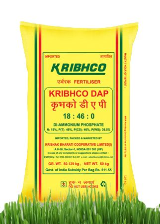
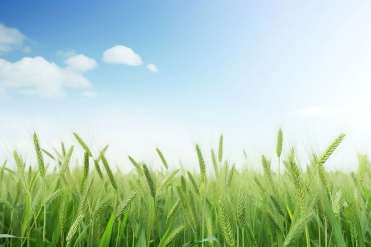
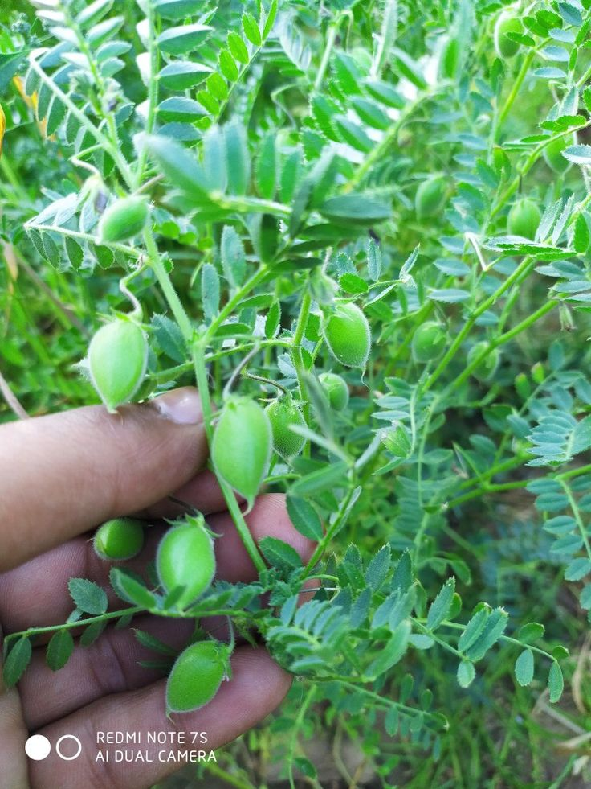

Kharif
Rice
A major staple crop that grows well in warm, humid conditions with adequate water.
- Season: Kharif
- Soil: Clay & loam
Explore crops, choose suitable fertilizers, and learn about quality seeds with simple information for better farming decisions.
Select a category and we will take you directly to the information section.
Understand season, soil preference and basic cultivation information.
A major staple crop that grows well in warm, humid conditions with adequate water.

An important cereal crop suited to cool growing conditions and well-drained fertile soil.

A valuable fibre crop requiring warm weather, sunlight and careful pest management.

A long-duration commercial crop used mainly for sugar and other valuable products.

A protein-rich oilseed crop that also supports soil health through nitrogen fixation.

An important pulse crop valued for its nutrition and ability to fit many farming systems.
Learn the primary purpose of common fertilizers. Always follow soil-test and local agricultural recommendations.

Common nitrogen fertilizer that supports healthy leafy and vegetative growth.

Diammonium phosphate supplies nitrogen and phosphorus for early root and plant development.
Muriate of potash supplies potassium, an important nutrient for overall plant strength.
A balanced fertilizer formulation providing equal proportions of three primary nutrients.
Organic inputs can improve soil organic matter and support long-term soil structure.
Good-quality seed is the first step toward a healthy and productive crop.

Choose varieties suitable for your local rainfall, season and field conditions.

Healthy, clean seed and recommended varieties support uniform crop establishment.

Select region-appropriate varieties with good germination and seed health.

Quality pulse seed helps establish a strong crop in suitable Rabi conditions.

A popular short-duration pulse option for suitable seasonal farming systems.
Choose crops suited to your climate and soil, use quality seeds, and apply fertilizers based on crop needs and soil-test recommendations.